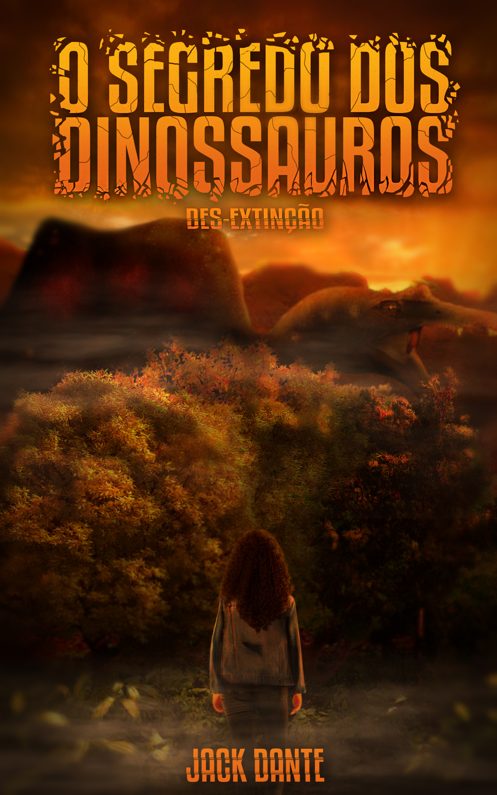

"Um romance de ficção científica envolvente que trás dinossauros às terras brasileiras!"

O segredo dos dinossauros: des-extinção
de Jack Dante
Sinopse:
Ao deparar-se com um dinossauro no caminho para casa, Dagny acaba por se envolver em toda uma operação secreta ocorrendo no país. Uma instalação foi criada em segredo no interior da floresta amazônica e por cinco anos o bilionário Antony Maverick manteve esses animais escondidos do resto do mundo.
A medida que mais perguntas surgem, verdades são reveladas. Quando tudo isso começou? De onde vêm os dinossauros? Quem mais sabe desse segredo?.. No meio de tantas interrogações, um sentimento cresce no peito de Dagny por um dos membros da equipe.
Como lidar com um mundo à beira do caos e seus sentimentos, ao mesmo tempo, sem perder o controle?
(E-book disponível na Amazon e no Kindle Unlimited)

Daniel Xavier, também conhecido como Jack Dante, tem 21 anos de idade. Nasceu e cresceu em Felixlândia, uma cidadezinha do interior de Minas Gerais. Desde criança sempre fora apaixonado por dinossauros e filmes de ficção cientifica, o que anos depois o levou a escrever o romance "O segredo dos dinossauros". É visível em suas histórias a forte inspiração nas obras de Michael Crichton, tanto no estilo de escrita, como no modo em que ele guia o leitor por um mundo fictício que, por muitas vezes, se assemelha a realidade.
Você pode encontrar mais informações sobre Jack Dante em suas redes sociais:
Twitter: @ysuxavier
Instagram: @jackdannte
Ficção científica
Young adult com protagonismo LGBT
Romance sáfico, suspense e ação
O segredo dos dinossauros é uma obra de ficção científica ambientada em terras brasileiras, cuja trama discorre sobre o cotidiano das pessoas ao lidar com um mundo onde dinossauros estão surgindo misteriosamente. Para manter a situação sob controle, e esconder essas magnificas criaturas do conhecimento público, o bilionário Antony Maverick deu início a uma operação secreta no interior da floresta amazônica, e durante 5 anos ele e sua equipe trabalharam duro nessa causa.
Certa noite, quando Dagny estava voltando para sua casa, ela nota um movimento estranho na floresta e, ao se aproximar, se vê cara a cara com um dinossauro. O fascínio que herdara de sua infância por essas criaturas fantásticas e incentivou a buscar respostas para aquele animal e, quando fora ver, estava envolvida em uma mega operação que apenas um seleto grupo de pessoas tinha conhecimento.
Uma jovem sem perspectiva na vida e sem um rumo o qual seguir, Dagny decide então se juntar a Maverick nessa jornada atrás de compreender a origem daqueles animais.
Reações dos leitores
— "Esse livro entrega o que promete, uma aventura cheia de dinossauros e representação LGBT com um romance safico envolvendo a protagonista.
Gostei demais desse livro, eu amo dinossauros e consumir um livro brasileiro com esse tema e com a representação que teve foi incrível.
Aguardo ansiosamente o livro 2!!"
— "Admito que minha leitura começou arrastada, mas, conforme acompanhava Dagny em sua nova vida, comecei a me interessar mais, principalmente pela reserva, que lugar mágico, que magnífico o que Dante fez, cada paisagem maravilhosa."
—"Um bom livro para quem curte dinossauros, cenas de ação, cenas de romance e muita intriga e mistérios. Não vou negar, Dante consegue te fazer ficar com os pelinhos da nuca eriçados de ansiedade e excitação pelo que virá."